Rain or Shine
- Chen Xin
- Wang Guoliang
- Xu Hanyue
- Wu Yiwen
- Tian Yuelin
Bet on Hong Kong weather. The Observatory reports what happened. An oracle confirms it on chain. A smart contract pays the winners.
A COMP7610 group project at the University of Hong Kong. It runs on the Ethereum Sepolia test network with test ETH. No real money is used.
Read from Sepolia on 6 November 2026, 20:28 (Hong Kong time).
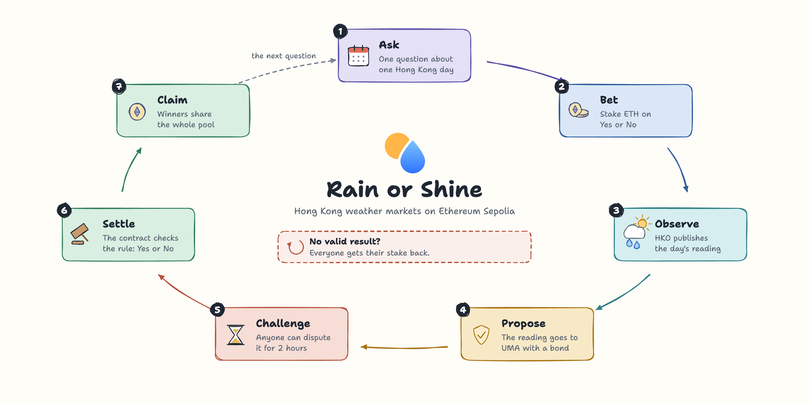
1What we built
A prediction market for Hong Kong weather. Here is one market, start to end.
- AskIt is a cloudy Monday. Mei thinks Tuesday will be wet. Ken thinks it will stay dry. A market asks: "Will HKO headquarters record 1.0 mm of rain or more on Tuesday?"
- BetMei stakes 0.02 ETH on Yes. Ken stakes 0.01 ETH on No. The ETH waits in the smart contract. Nobody can take it out early.
- ObserveTuesday passes. On Wednesday morning, the Hong Kong Observatory publishes Tuesday's rainfall: 3.2 mm.
- ProposeThe market's proposer sends "3.2 mm" to UMA's optimistic oracle. They lock a bond behind it.
- ChallengeFor two hours, anyone can dispute the number. Anyone can check it against HKO's file. Nobody disputes.
- SettleAnyone can now settle. The contract checks the rule: 3.2 is at least 1.0. Yes wins.
- ClaimMei claims 0.03 ETH: her stake plus Ken's. There is no fee. Ken sees the result and the reason.
- And if something goes wrong?If only one side has bets, if UMA rejects the number, or if no valid number arrives in time, the market refunds. Mei and Ken each get their stake back.
Mei and Ken are an example. Section 2.6 replays their story in the app, screen by screen.
What we delivered
Smart contracts
Markets, Yes and No pools, outcomes, refunds and claims. An adapter talks to UMA. Written in Solidity.
A web app
Browse, bet, follow and claim. English and Chinese. MetaMask signs every transaction.
Live markets
Six weather markets on Sepolia for 3 to 5 November and two one-hour rehearsals. A new pair opens every three days until 1 December. 123 bets from our test wallets so far.
Custom markets
Any HKO daily value, such as humidity or minimum temperature. Or any source the creator names. A local sports demo shows other topics work too.
An HKO tool
It downloads HKO's file and reads the value, so the proposer submits the right number.
Desktop packages
Zip files for macOS and Windows. Unzip, double-click, and the app opens. Nothing to install.
2Product design and user flow
Who uses it, what they need, the rules, how it runs, and what each screen does.
2.1Who uses it
| Role | Can do | Cannot do |
|---|---|---|
| Bettor | Stake ETH on Yes or No. Add more to the same side. Claim a payout or a refund. | Bet on both sides. Take money out before the end. |
| Market admin | Add a metric. Create a market with fixed rules. | Change rules after creation. Decide a result. |
| Proposer | Submit HKO's reading to UMA with a bond. | Bet in its own market. |
| Anyone | Check a reading. Dispute it with a bond during the challenge window. Settle it after. | Change a result that is already final. |
The app hides buttons a wallet cannot use. The contracts check every permission again. A proposer could still bet from another wallet and stay silent when it would lose. That turns the loss into a refund, so the proposer has to be trusted.
2.2User stories
| As a | I want to | So that | Where |
|---|---|---|---|
| Bettor | see the question, the data source and every deadline before I bet | I know exactly what I bet on | Event, Rules tab |
| Bettor | see the crowd's chance of Yes and my possible payout | I can judge the odds | Event, bet panel |
| Bettor | get my stake back when there is no valid result | a missing result never costs me | Settlement |
| Bettor | see all my bets and what I can claim in one place | I never miss a payout | My participation |
| Market admin | create a market from a metric card and a preview | new questions are quick and correct | Operations |
| Market admin | add a new metric, such as humidity | markets are not limited to rain | Operations |
| Proposer | load HKO's file and see the outcome before I submit | I submit the right reading | Operations |
| Anyone | check a reading and settle it after the challenge window | closing a market does not depend on us | Waiting |
2.3The rules of a market
- A market asks about one value on one Hong Kong day. Example: rainfall at HKO headquarters on 3 November.
- The condition is fixed: at least, at most, more than, less than, or a range.
- The smallest bet is 0.001 ETH. A wallet picks one side. It can add more to that side.
- Bets cannot be withdrawn. All ETH stays in the contract until the end.
- Winners share the whole pool, in proportion to their stakes. There is no fee. Gas is paid to the network as usual.
- Everyone gets a full refund when there is no valid result. The cases are in Figure 3.
Payout: your stake × (Yes pool + No pool) ÷ winning pool, rounded down to the wei.
In the story, the Yes pool is 0.02 ETH and the No pool is 0.01 ETH. Yes wins. Mei gets 0.02 × 0.03 ÷ 0.02 = 0.03 ETH.
The Yes share, Yes pool ÷ (Yes pool + No pool), is the crowd's chance of Yes. In the story it is 67 %.
2.4How it runs
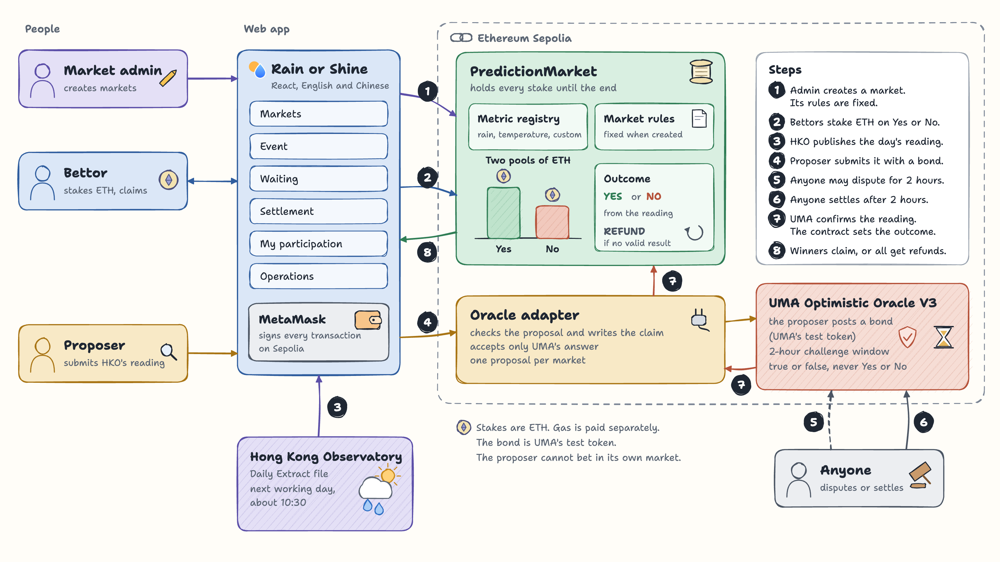
- Create. The admin creates a market in the app. Its question, source, deadlines and proposer are fixed in its rules.
- Bet. Bettors stake ETH on Yes or No. MetaMask signs. The contract adds the stake to a pool.
- Publish. After the day ends, HKO publishes the reading in its Daily Extract file.
- Propose. The proposer loads the file. The app shows the reading and the outcome it implies. The proposer submits it through the oracle adapter, with a bond.
- Dispute (optional). For two hours, anyone can dispute the reading on UMA. A reading nobody disputes is final.
- Settle. After two hours, anyone can settle. UMA returns the bond to the proposer.
- Decide. In the same transaction, UMA tells the adapter that the reading stands. The contract compares it with the rule and sets Yes or No.
- Claim. Winners claim their share. In a refund, everyone claims their stake.
What UMA does, and what it does not do. UMA confirms a statement such as "the rainfall on 3 November was 3.2 mm". It answers true or false. It never says Yes or No to our question. Our contract does that, with the rule written at creation. A false answer does not mean No. It means the market refunds.
2.5When things happen
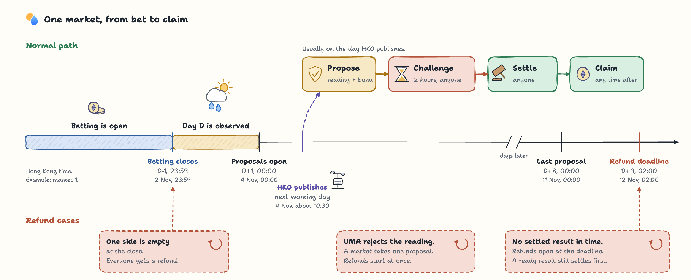
- Betting closes at 23:59 the night before the day. Nobody can bet once the weather is known.
- HKO publishes a day's row on the next working day, at about 10:30. A Friday waits until Monday.
- A result can be proposed for seven days. That covers weekends and holidays.
- If no result has settled, refunds open at D+9, 02:00. That is 26 hours after the last proposal time. A ready, undisputed result still settles first. A timeout never beats a valid result.
2.6The story in the app
These screens replay the story from Section 1. Live screens show the real Sepolia markets. Local screens come from a test chain on our computer. There, time can be moved forward, and a stand-in replaces UMA. The question covers one hour of rain, so the whole loop fits in one sitting. The screens and the contracts are the same as on Sepolia.
Ask: the admin writes the question
The admin picks a metric card or defines a new one. Then the condition and the time. The preview shows the exact question. One button creates the market, and its rules can never change.
Local, Operations page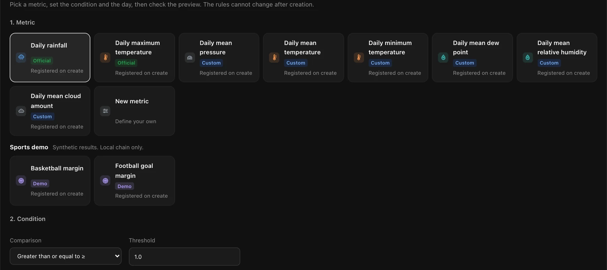
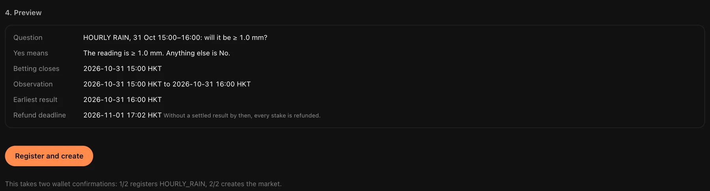
Bet: find a market
The markets page lists every question with its Yes share, pool, recent trades and close time. These are the six live markets on Sepolia.
Live, Markets page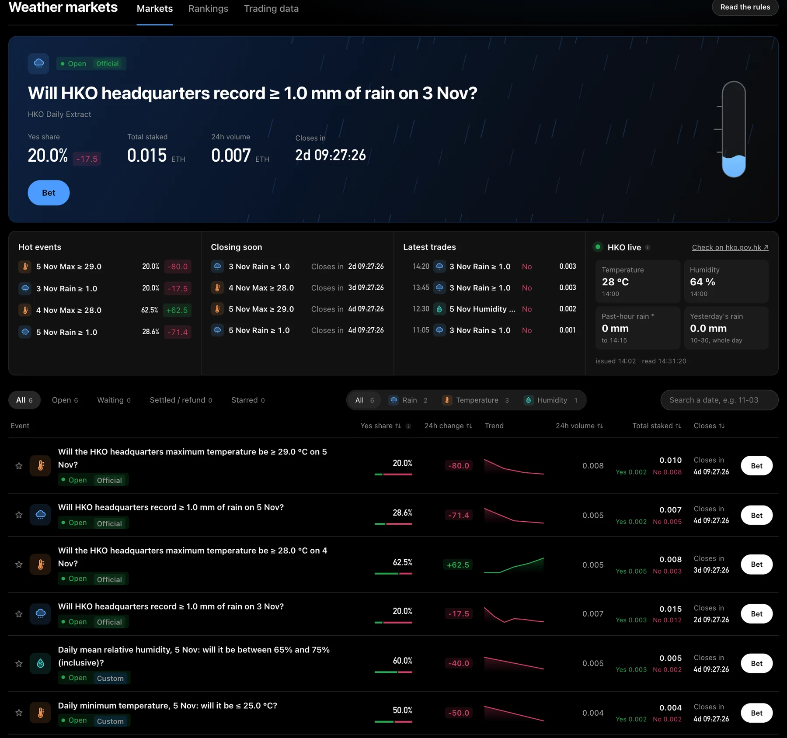
Bet: read the rules first
Each market shows a short spec: the question, the source, when betting closes, when results count, and what happens otherwise.
Live, Event page, Rules tab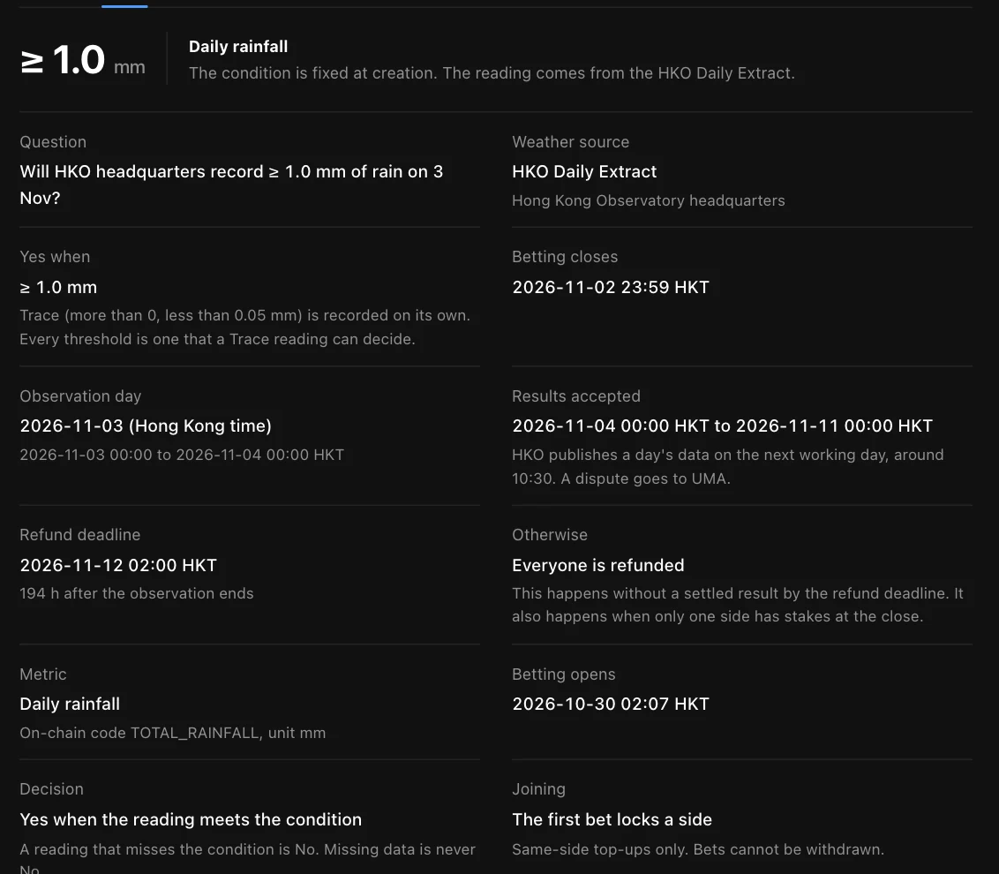
Bet: Mei stakes 0.02 ETH on Yes
She picks Yes and types 0.02. The review shows the side, the amount and the fee: none. Her wallet signs. Ken then stakes 0.01 ETH on No. The Yes share is now 67 %.
Local, Event page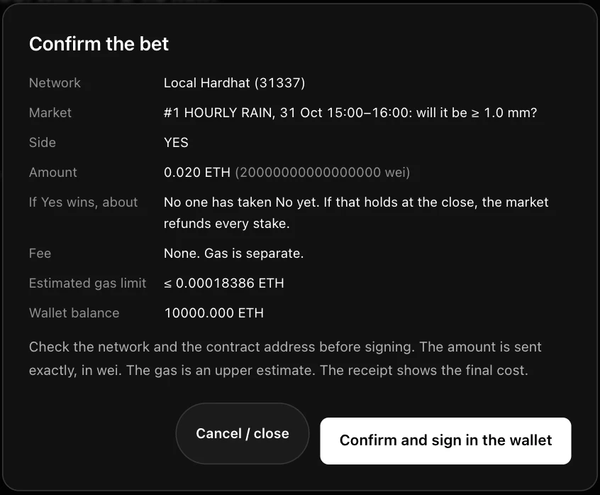
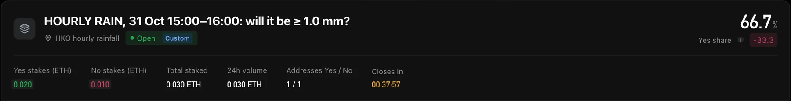
Observe: wait for the data
Betting is closed and the time window is over. The page shows each stage and its deadline. Now it waits for the proposer.
Local, Waiting page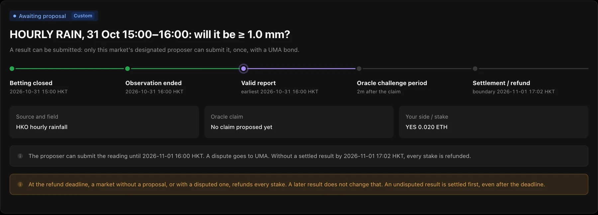
Propose: the proposer submits 3.2 mm
The proposer loads the report and types 3.2. The app checks it and shows the outcome before anything is sent: Yes. Then the proposer approves the bond and submits.
Local, Operations page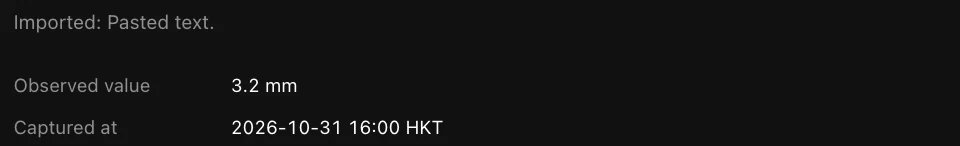
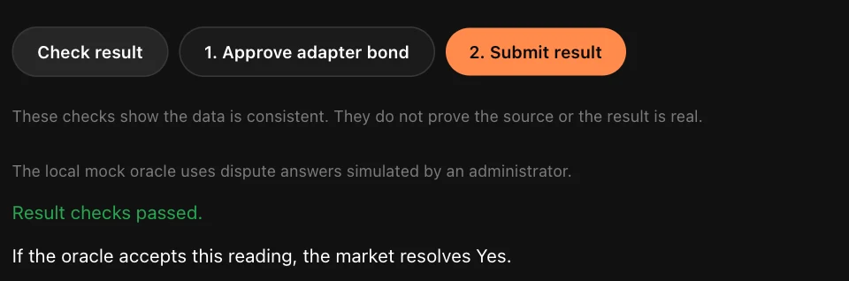
Challenge: time to dispute
The reading is now with the oracle. Anyone can dispute it until the deadline. Nobody does. On Sepolia this window is 2 hours. On the local chain it is 2 minutes.
Local, Operations page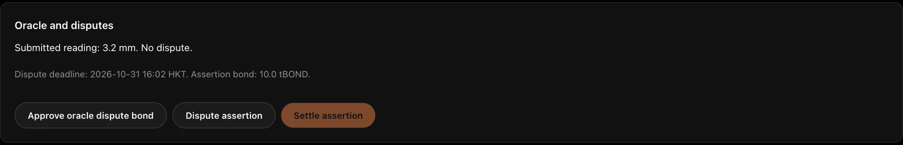
Settle: anyone closes it
The window is over and nobody disputed. Anyone can now settle. The contract compares 3.2 with the rule and writes Yes.
Local, Waiting page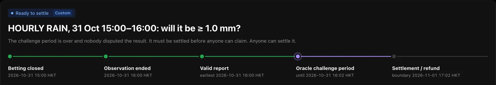
Claim: Mei is paid, Ken sees why
Mei sees Yes and 0.030 ETH to claim: her stake plus Ken's. One click pays her. Ken sees the same result and why he has nothing to claim.
Local, Settlement page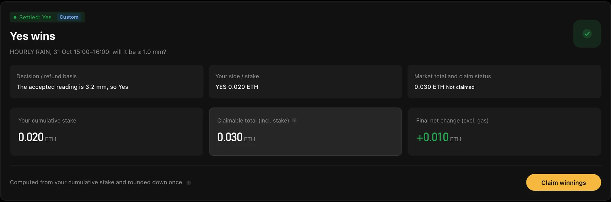
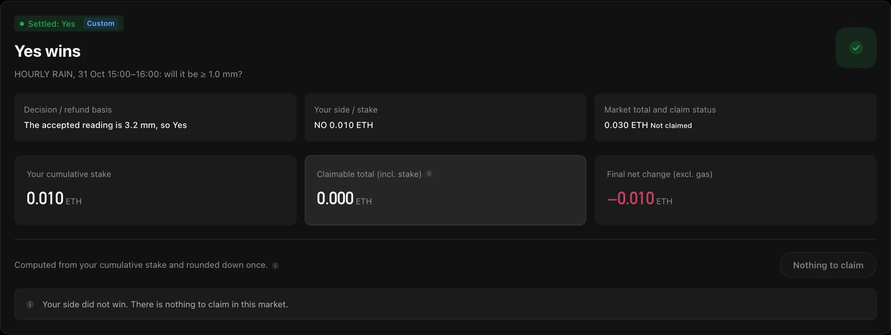
2.7How the code fits together
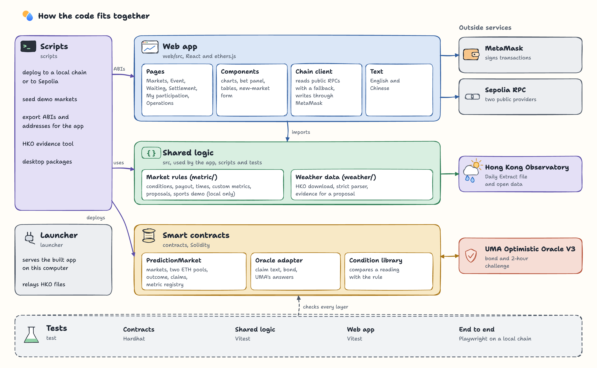
| Folder | What it holds |
|---|---|
contracts/ | The market, the metric registry, the oracle adapter and the condition library. |
src/metric/ | Market rules, conditions, payouts, deadlines, custom metrics and proposals. The app and the scripts both use it. |
src/weather/ | Downloads HKO files, reads them strictly and builds the evidence for a proposal. |
web/src/ | The React app: pages, components, the chain client and both languages. |
scripts/ | Deploys, seeds a local chain, exports addresses for the app and builds the desktop packages. |
launcher/ | The small server inside the desktop packages. It also relays HKO files. |
test/ | Contract, shared, web and browser tests. |
3Implementation and demo
What it is built with, what runs where, and how to try it. The screen-by-screen demo is in Section 2.6.
3.1Technology
| Part | Built with |
|---|---|
| Smart contracts | Solidity 0.8, Hardhat 3, OpenZeppelin 5 |
| Oracle | UMA Optimistic Oracle V3 on Sepolia. Bond: 1 test token. Challenge window: 2 hours. |
| Web app | React 19, TypeScript, Vite, ethers.js 6, MetaMask |
| Data | Hong Kong Observatory: the Daily Extract file and the open data API |
| Tests | Hardhat and Mocha, Vitest, Playwright |
| Desktop | Node.js 24 runtime with a small local server, for macOS and Windows |
3.2Smart contracts
PredictionMarket
Holds the metric registry, every market and both ETH pools. Decides Yes, No or Refund. Pays claims.
Oracle adapter
Checks a proposal, writes the statement for UMA and takes the bond. Accepts answers only from UMA.
Condition library
Compares a reading with the rule. Readings are whole numbers: the value × 100, so 3.2 mm is 320.
Fairness rules in the code:
- The proposer cannot bet in its own market.
- Rules are fixed at creation and stored on chain. Anyone can read them.
- Betting closes before the day starts.
- A market takes one proposal. A late or repeated answer from UMA cannot change a final result.
- A ready, undisputed result always settles before a refund can start.
- Stakes are ETH. The bond is UMA's test token. Gas is separate. The three never mix.
3.3Live on Sepolia
Six weather markets went live on 30 October 2026. They read HKO headquarters, and bets close the night before each day. Markets 7 and 8 are one-hour rehearsals on 31 October with HKO's hourly rain data. They ran the loop early, on the real oracle. From market 9 a new pair opens every three days until 1 December: rain of 1.0 mm or more, and a maximum temperature at HKO's forecast for the day. So some market is always open for bets. In every market the admin wallet is also the proposer, so it cannot bet in them.
| # | Question | Kind | Bets | Yes share | Status |
|---|---|---|---|---|---|
| 1 | Rain of 1.0 mm or more on 3 Nov | Official | 20 | 34.1 % | Settled: No |
| 2 | Maximum temperature of 28.0 °C or more on 4 Nov | Official | 21 | 53.7 % | Settled: Yes |
| 3 | Rain of 1.0 mm or more on 5 Nov | Official | 19 | 28.6 % | Settled: No |
| 4 | Maximum temperature of 29.0 °C or more on 5 Nov | Official | 19 | 57.7 % | Settled: Yes |
| 5 | Minimum temperature of 25.0 °C or less on 5 Nov | Custom | 14 | 44.4 % | Settled: No |
| 6 | Mean humidity from 65 % to 75 % on 5 Nov, both included | Custom | 14 | 45.9 % | Settled: No |
| 7 | Rain at HKO headquarters from 19:15 to 20:15 on 31 Oct (one-hour rehearsal) | Custom | 2 | 40.0 % | Refunded |
| 8 | Rain at HKO headquarters from 22:30 to 23:30 on 31 Oct (one-hour rehearsal) | Custom | 2 | 40.0 % | Settled: No |
| 9 | Rain of 1.0 mm or more on 8 Nov | Official | 4 | 25.0 % | Open until 7 Nov, 23:59 |
| 10 | Maximum temperature of 29.0 °C or more on 8 Nov | Official | 5 | 50.0 % | Open until 7 Nov, 23:59 |
| 11 | Rain of 1.0 mm or more on 11 Nov | Official | 2 | 100.0 % | Open until 10 Nov, 23:59 |
| 12 | Maximum temperature of 26.0 °C or more on 11 Nov | Official | 1 | 100.0 % | Open until 10 Nov, 23:59 |
Read from Sepolia on 6 November 2026, 20:28 (Hong Kong time). Results come in from 4 November to 3 December.
The whole loop, live
On the night of 31 October two one-hour markets ran the last steps of the loop early, on the real UMA oracle. Both read HKO's hourly rain at the Observatory. One ended in a refund and one in a payout, each as the rules say. The rehearsal also found a bug before the six main markets need the same steps.
- 19:15Market 7 closes for bets: 0.002 ETH on Yes, 0.003 ETH on No.
- 20:15Its hour ends. Our capture script misses HKO's 20:15 report, and HKO replaces it 15 minutes later.
- 22:15The proposal window closes with no reading. The rules say: never propose missing data.
- 22:30Market 8 closes for bets: 0.002 ETH on Yes, 0.003 ETH on No.
- 23:25Market 7 reaches its refund time. Both wallets take their stakes back in full.
- 23:43HKO publishes the 23:30 report: 0.0 mm at the Observatory. We save it.
- 23:44The first proposal fails. Our operator script left out the proposer's address in a check. We fix it.
- 00:12The proposer sends 0.0 mm to UMA with a bond of one test token. The 10-minute challenge window starts.
- 00:22No one disputes it. Market 8 settles No.
- 00:24The No wallet claims 0.005 ETH: its own stake plus the Yes stake. UMA returns the bond.
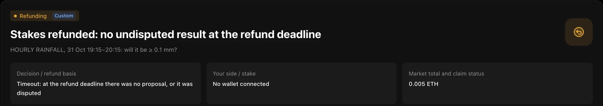
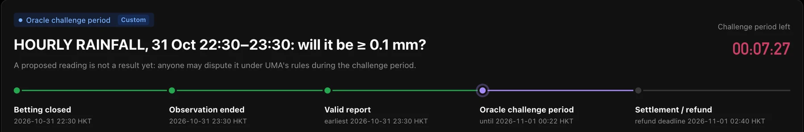
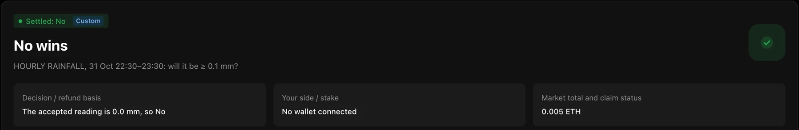
Contracts on Etherscan: PredictionMarket, oracle adapter, UMA Optimistic Oracle V3, bond token. Source code verified on Sourcify as an exact match: PredictionMarket, oracle adapter.
3.4Try it
In the browser
Open the app. You can browse every market without a wallet.
- Install MetaMask.
- Switch to Sepolia.
- Get test ETH from a faucet.
- Bet from 0.001 ETH.
On a desktop
Download the zip for your computer.
- Unzip it.
- Mac: open START-MAC.command.
- Windows: open START-WINDOWS.cmd.
- The app opens in your browser.
From the source
Node.js 24 and npm. No key is needed to read Sepolia.
npm cinpm run dev:metric:sepolia- The README shows the full cycle on a local chain.
3.5Testing
| Suite | Tests | What it covers |
|---|---|---|
| Contracts | 80 | Bets, limits, outcomes, refunds, claims, permissions and oracle answers |
| Shared logic | 622 | Rules, conditions, payouts, deadlines and HKO parsing |
| Web app | 235 | Pages, forms and number formats in both languages |
| End to end | 18 | A real browser on a real local chain: create, bet, propose, settle, claim and refund |
All passing on 8 November 2026.
3.6Security
Bets, final results and payouts cannot be edited by anyone, including us.
On chain
The contracts cannot be upgraded, paused or emptied. Only the named proposer can submit a result. Only UMA's answer settles it. A disputed market refunds.
In the app
There is no server and no key. Your wallet signs every transaction. The app checks the contracts before it acts. Outside scripts are blocked.
In the code and downloads
Build steps are pinned. CodeQL and Dependabot watch the code. Nobody can rewrite the main branch. GitHub signs each desktop package.
A check runs twice a day and reports what it finds. Details are in SECURITY.md.
4Research, questions and answers
Before building, we studied how two real platforms run weather markets: Polymarket and Kalshi.
4.1The questions we asked
We asked six questions of each platform. The last column is what we chose.
| Question | Polymarket | Kalshi | Rain or Shine |
|---|---|---|---|
| How do people bet? | Buy Yes or No shares. Prices move with trades. | Tap Yes or No and enter an amount. The order fills at the best prices. | Pick Yes or No and stake ETH. One side per wallet. |
| Which wallet and money? | A crypto wallet such as MetaMask. USDC on Polygon. | An account in US dollars on a regulated exchange. | MetaMask. Test ETH on Sepolia. |
| When does betting stop? | It depends on each market. | When the target day ends, in local time. | At 23:59 the night before the day. |
| Who decides the result? | Official reports from a named weather station, confirmed by an optimistic oracle with a bond. | US National Weather Service reports. The exchange settles. | HKO's daily data, confirmed by UMA's optimistic oracle with a bond. |
| How are winnings paid? | $1 per winning share. Trading fees. | $1 per winning contract. A fee of 0.07 × price × (1 − price). | Winners share the whole pool. No fee. |
| What if data is late or missing? | Wait, switch to a backup source, or clarify within 7 days. | Extend the deadline, use a backup source, or settle at the last fair price. | Seven days to propose. Otherwise, full refunds. |
4.2What we kept, and what we changed
Kept
Price as probability. Official data as the judge. Clear rules for each market. An optimistic oracle with a bond. Written rules for late data.
Changed: no fee
A course project needs no revenue. The whole pool goes to the winners. We keep nothing.
Changed: hold to the end
Shares cannot be sold early. Pools are simpler, and every payout is always fully funded.
We also chose refunds over a "last fair price". Without an exchange, nobody can set a fair price.
4.3Problems we found, and how we solved them
| Problem | Our answer |
|---|---|
| Who reports the weather? | HKO publishes the data. The named proposer submits it, and has to be trusted to do so. Anyone can check the number and dispute it. |
| The reporter could bet, then hide a bad result. | The proposer's address cannot bet in its own market. With no result, everyone is refunded. A second wallet can still get around this (Section 5). |
| Vague rules lead to disputes. | Each market fixes its question, source, condition and deadlines at creation. The app shows them as a short spec. |
| Data can be late or missing. | Seven days to propose, then refunds. The waiting page says when HKO usually publishes. |
| A wrong number could be submitted. | Anyone can dispute it for two hours. A rejected number refunds the market at once. |
| A timeout could override a valid result. | A ready, undisputed result always settles first. |
| Nobody bets on one side. | The market refunds in full at the close. |
4.4Problems we hit while building
| Problem | What we did |
|---|---|
| We found that a proposer could bet, then hold back a losing result. | We blocked proposers from betting, added the settle-first rule and redeployed on 30 October. |
| UMA on Sepolia has no voters to decide disputes. | A disputed market refunds at the deadline. The rules say so. |
| HKO publishes only on working days. | Deadlines leave seven days. The app shows when data is due. |
| Browsers on other sites cannot read HKO's daily file. | The desktop app relays it. A proposer can also load the file by hand. |
| The evidence carried our computer's time. The chain's clock runs a few seconds behind, so the contract would reject it. | The tools now use the chain's own time, and wait for the next block when needed. |
| Free public nodes limit requests, and one of them drops old data. | The app paces its reads over two nodes. Each call goes to the node that serves it best, and moves to the other when one is busy or has dropped the data. |
| In the first rehearsal our capture script missed HKO's report: it expected no space after a colon. HKO keeps only the latest report. | The script now reads the report as JSON, checks every 30 seconds and keeps every copy. With no reading, that market refunded, as the rules say. |
| In the second rehearsal the first proposal failed. Our operator script ran a check without naming the proposer, so the market refused it. | The script now names the proposer. The fix came days before the six main markets need it. |
5Limits and next steps
- Each market has one named proposer. If it stays silent, the market refunds. With a second wallet, it could use this to avoid a loss. Next: let anyone propose, with a reward.
- Sepolia has no UMA voters, and the bond token is free. So a dispute there can void a result but not correct it, and anyone can do that at no cost. Next: a network with UMA's vote.
- Bets are held to the end. Next: an order book or AMM for early exits.
- All markets read one station. Next: more stations, districts and typhoon signals.
- The sports cards in the app are a local demo with sample data. They never run on Sepolia.